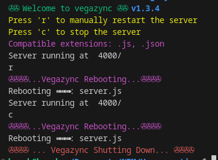

Package Description
vegazync is used to watch and monitor all of your project files so you don't need to restart manually and let vegazync handle it for you. It can monitor any type of changes in ".js", ".html", ".json", ".css", "image files(png, jpg, jpeg, gif, svg)" & ".md" files which will make your development smooth and easy.
Installation
Step 1: To Install Globally
npm install -g vegazyncTo Install Locally in Your Project
npm i vegazyncStep 2: Inside package.json file add a script
{
"name": "vegazync",
"scripts": {
"start": "vegazync server.js",
}
}Step 3: To Start the server with vegazync
npm startManual Restart
You can manually restart vegazync via typing 'r' and hitting Enter in the terminal.
Stop
To stop and exit the process you can type 'c' and hit Enter in the terminal.
Ignoring
vegazync ignores ".env", "node_modules" & ".gitignore" files. Will add the feature of manually ignoring specific files and directories in future.
Contributing
Contributions are welcome! Please follow the guidelines.
Preview
GitHub Repository
Visit VegaZync GitHub RepositoryAbout the Developer
Harsh Vardhan
A passionate developer with passion in Web & Android development and open-source contributions. Loves to build tools that make developers' lives easier.